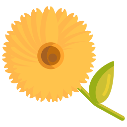
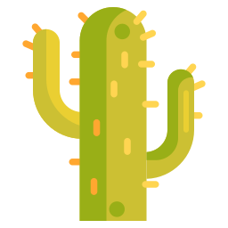

嗨，我是Luxiaoxue，来自中国北京的UI视觉设计师。
我从事UI / UX，网页设计，品牌和标识，动态图形，标牌和寻路以及印刷设计等项目。积累了大型网站设计、交互经验，具有独立设计与开发能力。


用户体验设计
我开发了交互式原型来演示实际场景。其他技术包括生成用户流，角色，线框和动画。

品牌与身份
品牌不仅仅是字体类型或图标，品牌还唤起了情感。设计越简单，就越值得纪念。
关于我
简介和经验
作为以人为本设计力量的忠实拥护者，我着迷于用户交互和基于人的问题解决方案。以用户为核心着手设计，并专注于理解我所设计的人们的潜在需求和情感，旨在创建清晰，有影响力的解决方案，以丰富他们的生活。
我是一个狂热的梦想家，喜欢解决问题并通过设计产生积极的影响。我专门研究移动和Web的UI / UX设计，并且熟悉Web开发。在业余时间，我喜欢从事附带项目，喜欢运动，摄影，画画，编码和旅行。
LUXIAOXUE©2019版权所有